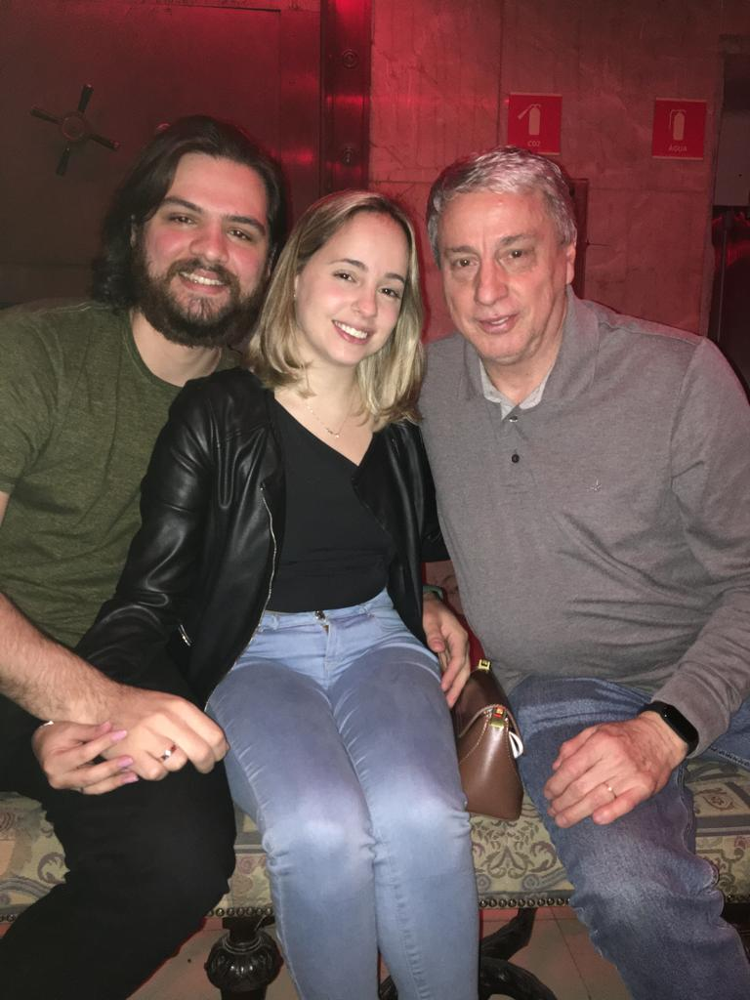
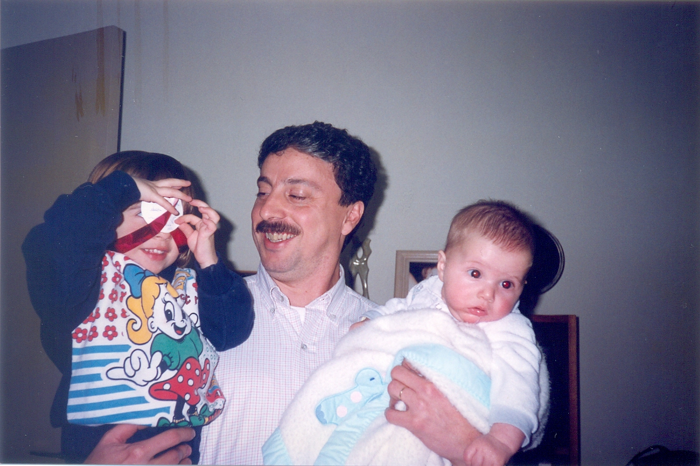
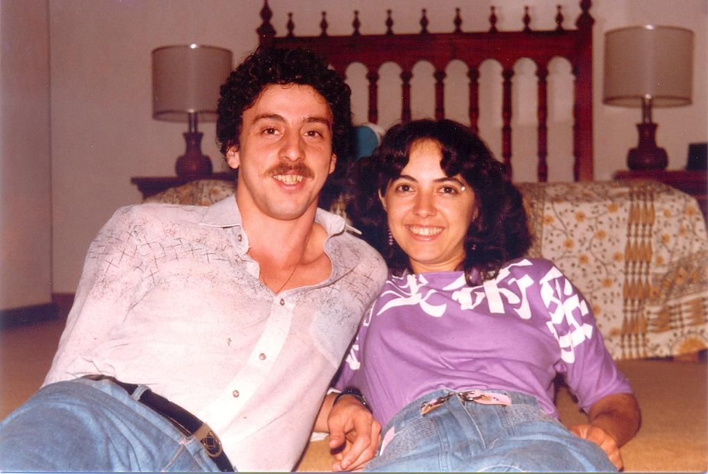
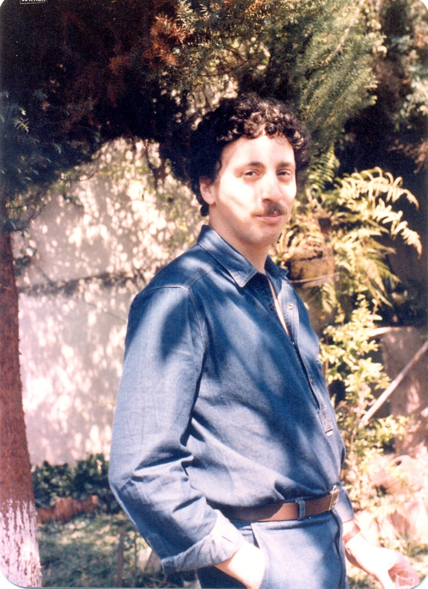
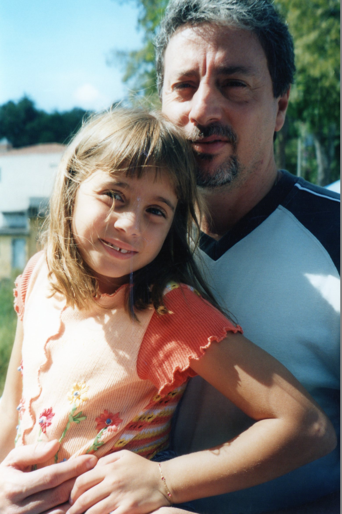

Start
é...................
Em uma galaxia não tão distante conhecida como Guarulhos, um homem, uma máquina...
Especialista em tecidos, carpinteiro de primeira, admirador de um bom futebol e de um gosto músical indiscutível.
Maridão da Helo, tio exemplar, pai do amor da minha vida Deborah e do meu chará, cunhado e investidor Lucas.
Esse é o Mauro!
Espero ser marido para sua filha e pai do seu neto tão bom quanto o senhor foi.
Obrigado por cuidar de mim.
E desculpa por vomitar no seu carro.





Fim